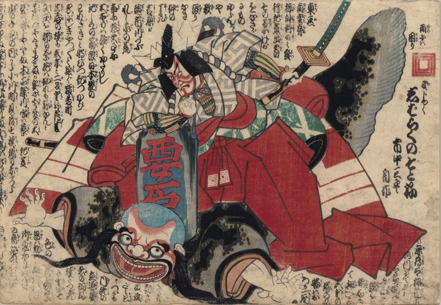

鯰；ナマズ，要石；カナメイシ

鎌倉権五郎に要石で押さえつけられた鯰坊主。
著作者：市中三畳，歌川国貞，仮名垣魯文／出典：親書誌：U426_nichibunken_0467：しばらくのそとね；シバラクノソトネ／日付：2025／資源識別子：U426_nichibunken_0467_0001_0000
Copyright (c)2010- International Research Center for Japanese Studies, Kyoto, Japan. All rights reserved.